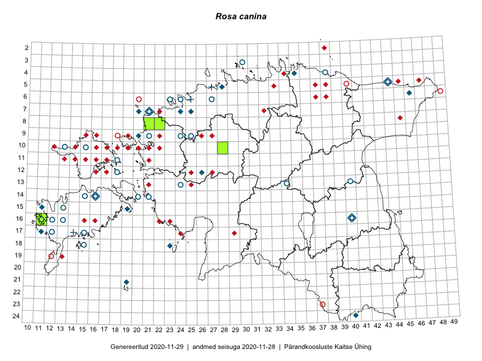

Rosa canina — koer-kibuvits
Rosaceae :: Rosa canina L. (149); Rosa canina subsp. canina L. (4); Rosa canina var. lutetiana (Léman) Baker (2)

Kaart põhineb 224 kirjel:
vaatlusi 84
herbaareksemplare 71
PKÜ kirjeid1 52
ELFi kirjeid2 17
Taime kaasaegsed ja ajaloolised leiukohad asuvad 109 ruudus.
Tingmärgid ja ruutude arvud periooditi (U3 / V4 )
█ 2006–2020 (18/–)
◆/◇ 1971–2005 (61/70)
○ 1921–1970 (51/10)
+ kuni 1920 (3/2)
× hävinud (–/0)
? kaheldav (–/2)
| Ruut | Leidja(d) | Leiuaeg | Kirje |
|---|---|---|---|
| 14-19 | Ingo Valgma, Marje Loide, Riina Laurimaa | 2019-06-14 | ruut/ala: Rosa canina L. |
| 09-15 | Haide-Ene Rebassoo | 1957–1984 | ruut/ala: Rosa canina L. |
| 09-16 | Haide-Ene Rebassoo | 1957–1984 | ruut/ala: Rosa canina L. |
| 10-12 | Haide-Ene Rebassoo | 1957–1984 | ruut/ala: Rosa canina L. |
| 10-13 | Haide-Ene Rebassoo | 1957–1984 | ruut/ala: Rosa canina L. |
| 10-14 | Haide-Ene Rebassoo | 1957–1984 | ruut/ala: Rosa canina L. |
| 10-16 | Haide-Ene Rebassoo | 1957–1984 | ruut/ala: Rosa canina L. |
| 10-17 | Taavi Tuulik | 1984–1986 | ruut/ala: Rosa canina L. |
| 11-13 | Haide-Ene Rebassoo | 1957–1984 | ruut/ala: Rosa canina L. |
| 11-14 | Haide-Ene Rebassoo | 1957–1984 | ruut/ala: Rosa canina L. |
| 11-15 | Haide-Ene Rebassoo | 1957–1984 | ruut/ala: Rosa canina L. |
| 11-16 | Haide-Ene Rebassoo | 1957–1984 | ruut/ala: Rosa canina L. |
| 11-16 | A. Tomson | 1935 | ruut/ala: Rosa canina L. |
| 11-17 | Haide-Ene Rebassoo | 1957–1984 | ruut/ala: Rosa canina L. |
| 11-18 | Haide-Ene Rebassoo | 1957–1984 | ruut/ala: Rosa canina L. |
| 12-16 | Haide-Ene Rebassoo | 1957–1984 | ruut/ala: Rosa canina L. |
| 12-17 | Haide-Ene Rebassoo | 1957–1984 | ruut/ala: Rosa canina L. |
| 12-18 | Haide-Ene Rebassoo | 1957–1984 | ruut/ala: Rosa canina L. |
| 05-47 | botaaniline ekspeditsioon ZBI | 1982-07-10 | ruut/ala: Rosa canina L. |
| 06-46 | Liivia Laasimer, Linda Viljasoo, Heljo Krall, Vilma Kuusk, Malle Leht | 1982-07-10 | ruut/ala: Rosa canina L. |
| 04-35 | Vilma Kuusk, Tiiu Kull | 1998-08-27 | ruut/ala: Rosa canina L. |
| 05-38 | botaaniline ekspeditsioon ZBI | 1982-07-19 | ruut/ala: Rosa canina L. |
| 05-40 | M. Pork | 1953 | ruut/ala: Rosa canina L. |
| 07-32 | E. Adder | 1987 | ruut/ala: Rosa canina L. |
| 06-38 | 1935 | ruut/ala: Rosa canina L. | |
| 09-18 | Liivia Laasimer | 1975 | ruut/ala: Rosa canina L. |
| 10-19 | L. Laasimer | 1975 | ruut/ala: Rosa canina L. |
| 12-18 | H. Rebassoo | 1957–1972 | ruut/ala: Rosa canina L. |
| 12-27 | T. Ploompuu | 1998 | ruut/ala: Rosa canina L. |
| 16-40 | Linda Viljasoo, Maret Kask, A. Remmel | 1947–1981 | ruut/ala: Rosa canina L. |
| 15-17 | M. Abakumova | 1984-08-24 | ruut/ala: Rosa canina L. |
| 13-21 | botaaniline ekspeditsioon ZBI | 1983-07-09–1986-06-19 | ruut/ala: Rosa canina L. |
| 15-11 | H. Rebassoo, K. Pork, M. Reitalu | 1960–1972 | ruut/ala: Rosa canina L. |
| 16-16 | botaaniline ekspeditsioon ZBI | 1973-06 | ruut/ala: Rosa canina L. |
| 17-14 | H.-E. Rebassoo | 1962-05-17 | ruut/ala: Rosa canina L. |
| 05-33 | botaaniline ekspeditsioon ZBI | 1974-07–1977-08 | ruut/ala: Rosa canina L. |
| 17-29 | A. Tomson | 1936-06–1937 | ruut/ala: Rosa canina L. |
| 17-29 | H. Krall, V. Kuusk, L. Viljasoo, M. Abakumova | 1985-07-04 | ruut/ala: Rosa canina L. |
| 07-20 | Gustav Vilbaste | 1930–1939 | ruut/ala: Rosa canina L. |
| 21-19 | Haide-Ene Rebassoo | 1979-07-02–1979-07-05 | ruut/ala: Rosa canina L. |
| 21-19 | TRÜ tudengid, Hans Trass, Aino Kalda | 1961-07–1961-07-11 | ruut/ala: Rosa canina L. |
| 03-39 | Haide-Ene Rebassoo | 1988-06-03 | ruut/ala: Rosa canina L. |
| 03-34 | Haide-Ene Rebassoo | 1971-06-08 | ruut/ala: Rosa canina L. |
| 03-30 | Haide-Ene Rebassoo | 1973-06-15 | ruut/ala: Rosa canina L. |
| 21-19 | Julius Gröntved | 1929 | ruut/ala: Rosa canina L. |
| 04-28 | Haide-Ene Rebassoo | 1973-06-06 | ruut/ala: Rosa canina L. |
| 06-23 | Haide-Ene Rebassoo | 1973-06-05 | ruut/ala: Rosa canina L. |
| 06-23 | Haide-Ene Rebassoo | 1973-06-05 | ruut/ala: Rosa canina L. |
| 03-35 | Haide-Ene Rebassoo | 1971-06-09 | ruut/ala: Rosa canina L. |
| 03-39 | Haide-Ene Rebassoo | 1975-06-20 | ruut/ala: Rosa canina L. |
| 03-39 | Haide-Ene Rebassoo | 1972-06-07 | ruut/ala: Rosa canina L. |
| 12-20 | H.-E. Rebassoo | 1969-06-18 | ruut/ala: Rosa canina L. |
| 16-10 | H.-E. Rebassoo | 1980-07-10 | ruut/ala: Rosa canina L. |
| 11-20 | H.-E. Rebassoo | 1971-06-19 | ruut/ala: Rosa canina L. |
| 12-20 | H.-E. Rebassoo | 1977-07-22 | ruut/ala: Rosa canina L. |
| 10-20 | H.-E. Rebassoo | 1969-06-13 | ruut/ala: Rosa canina L. |
| 19-12 | Haide-Ene Rebassoo | 1977-10-04 | ruut/ala: Rosa canina L. |
| 16-11 | Haide-Ene Rebassoo | 1969-07-30 | ruut/ala: Rosa canina L. |
| 16-11 | Haide-Ene Rebassoo | 1969-07-30 | ruut/ala: Rosa canina L. |
| 12-20 | H.-E. Rebassoo | 1971-06-19 | ruut/ala: Rosa canina L. |
| 11-20 | H.-E. Rebassoo | 1962-06-08 | ruut/ala: Rosa canina L. |
| 11-20 | H.-E. Rebassoo | 1967-06-22 | ruut/ala: Rosa canina L. |
| 16-11 | Haide-Ene Rebassoo | 1969-07-31 | ruut/ala: Rosa canina L. |
| 16-11 | Haide-Ene Rebassoo | 1969-07-31 | ruut/ala: Rosa canina L. |
| 11-18 | H.-E. Rebassoo | 1979-06-23–1980-08-25 | ruut/ala: Rosa canina L. |
| 16-11 | Haide-Ene Rebassoo | 1969-07-31 | ruut/ala: Rosa canina L. |
| 16-11 | Haide-Ene Rebassoo | 1960-08-27 | ruut/ala: Rosa canina L. |
| 13-20 | H.-E. Rebassoo | 1973-06-19 | ruut/ala: Rosa canina L. |
| 16-10 | Haide-Ene Rebassoo | 1960-08-26–1980-07-10 | ruut/ala: Rosa canina L. |
| 16-11 | Haide-Ene Rebassoo | 1971-07-11 | ruut/ala: Rosa canina L. |
| 11-20 | H.-E. Rebassoo | 1966-08-16 | ruut/ala: Rosa canina L. |
| 11-20 | H.-E. Rebassoo | 1969-07-01 | ruut/ala: Rosa canina L. |
| 10-15 | Haide-Ene Rebassoo | 1957–1984 | ruut/ala: Rosa canina L. |
| 05-45 | Linda Viljasoo, V. Meriste | 1972-08 | ruut/ala: Rosa canina L. |
| 10-19 | Haide-Ene Rebassoo | 1969-06-10 | ruut/ala: Rosa canina L. |
| 09-19 | Haide-Ene Rebassoo | 1968-06-14 | ruut/ala: Rosa canina L. |
| 17-14 | Elle Rajandu, Karin Kikas | 2015-07-22 | ruut/ala: Rosa canina L. |
| 15-18 | Elle Rajandu, Karin Kikas | 2015-07-24 | ruut/ala: Rosa canina L. |
| 15-15 | Karin Kikas, Elle Rajandu | 2015-07-23 | ruut/ala: Rosa canina L. |
| 15-15 | Karin Kikas, Elle Rajandu | 2015-07-23 | ruut/ala: Rosa canina L. |
| 15-14 | Karin Kikas, Elle Rajandu | 2015-07-23 | ruut/ala: Rosa canina L. |
| 14-18 | Karin Kikas, Elle Rajandu | 2015-07-21 | ruut/ala: Rosa canina L. |
| 14-18 | Karin Kikas, Elle Rajandu | 2015-07-21 | ruut/ala: Rosa canina L. |
| 12-42 | Eeva-Maria Jeletsky, Tarmo Niitla | 2016-06-04 | ruut/ala: Rosa canina L. |
| 17-12 | A. Somann | 1960-09-08 | TU265480: Rosa canina L. |
| 21-19 | Linda Viljasoo | 1972-09-21 | TAA0015161: Rosa canina L. |
| 18-23 | Tiina Ksenofontova | 1981-06-30 | TAA0015162: Rosa canina L. |
| 07-20 | Toomas Kukk | 1998-07-28 | TAA0015164: Rosa canina L. |
| 08-22 | Toomas Kukk | 2006-08-18 | TAA0015167: Rosa canina L. |
| 06-23 | Visolde Puusepp, Alma Saare | 1960-07-14 | TAA0015168: Rosa canina L. |
| 10-15 | Gustav Vilbaste | 1930-06-26 | TAA0015171: Rosa canina L. |
| 21-19 | Maret Kask, J. Vilbaste | 1973-06-08 | TAA0015172: Rosa canina L. |
| 09-20 | Maret Kask | 1981-07-07 | TAA0015177: Rosa canina L. |
| 09-24 | Linda Viljasoo | 1960-08-05 | TAA0015179: Rosa canina L. |
| 05-44 | Elsa Varep | 1955-07-18 | TAA0015181: Rosa canina L. |
| 05-44 | Elsa Varep | 1955-07-18 | TAA0015182: Rosa canina L. |
| 12-18 | Haide-Ene Rebassoo | 1957-06-27 | TAA0015183: Rosa canina L. |
| 05-44 | Heljo Krall | 1982-07-22 | TAA0015186: Rosa canina L. |
| 11-18 | Haide-Ene Rebassoo | 1957-06-26 | TAA0015187: Rosa canina L. |
| 04-35 | Tiiu Kull | 1998-08-27 | TAA0015188: Rosa canina L. |
| 06-24 | Visolde Puusepp, Alma Saare | 1960-07-19 | TAA0015189: Rosa canina L. |
| 15-19 | Liivia Laasimer | 1972-07-25 | TAA0015190: Rosa canina L. |
| 12-26 | Heinrich Aasamaa | 1974-10-13 | TAM0054696: Rosa canina L. |
| 12-26 | Heinrich Aasamaa | 1974-10-13 | TAM0054695: Rosa canina L. |
| 12-26 | Heinrich Aasamaa | 1974-10-13 | TAM0054694: Rosa canina L. |
| 12-26 | Heinrich Aasamaa | 1974-10-13 | TAM0054693: Rosa canina L. |
| 07-25 | Heinrich Aasamaa | 1972-07-03 | TAM0054700: Rosa canina L. |
| 09-21 | Heinrich Aasamaa | 1969-09-08 | TAM0054699: Rosa canina L. |
| 09-21 | Heinrich Aasamaa | 1969-09-08 | TAM0054698: Rosa canina L. |
| 09-21 | Heinrich Aasamaa | 1969-09-08 | TAM0054697: Rosa canina L. |
| 15-11 | Heinrich Aasamaa | 1977-08-21 | TAM0054632: Rosa canina L. |
| 03-30 | G. Vilbaste | 1948-07-12 | TAM0060449: Rosa canina L. |
| 07-24 | H. Aasamaa | 1978-09-02 | TAM0028495: Rosa canina subsp. canina L. |
| 03-30 | G. Vilbaste | 1948-07-12 | TAM0029981: Rosa canina subsp. canina L. |
| 13-34 | G. Vilbaste | 1948-06-22 | TAM0029983: Rosa canina subsp. canina L. |
| 14-21 | K. Eichwald | 1955-06-20 | TU277262: Rosa canina L. |
| 13-24 | A. Kalda | 1958-07-14 | TU277263: Rosa canina L. |
| 18-15 | E. Lellep | 1954-06-30 | TU277266: Rosa canina L. |
| 14-20 | E. Lellep | 1953-06-29 | TU277267: Rosa canina L. |
| 16-11 | K. Eichwald | 1956-07-05 | TU277268: Rosa canina L. |
| 06-23 | K. Eichwald | 1960-07-14 | TU277270: Rosa canina L. |
| 06-27 | L. Pihlapuu | 1964-06-25 | TU277271: Rosa canina L. |
| 04-38 | A. Wiren | 1926-07-09 | TU277272: Rosa canina L. |
| 14-21 | L. Pihlapuu | 1961-06-12 | TU277275: Rosa canina L. |
| 06-27 | L. Pihlapuu | 1964-06-25 | TU277278: Rosa canina L. |
| 14-16 | L. Pihlapuu | 1972-07-16 | TU277279: Rosa canina L. |
| 14-16 | L. Pihlapuu | 1972-07-16 | TU277280: Rosa canina L. |
| 07-21 | K. Eichwald | 1960-07-13 | TU277283: Rosa canina var. lutetiana (Léman) Baker |
| 07-21 | K. Eichwald | 1960-07-13 | TU277415: Rosa canina var. lutetiana (Léman) Baker |
| 16-40 | A. Remmel | 1955-07-29 | TU277285: Rosa canina L. |
| 14-15 | V. Veski | 1948-08-12 | TU277286: Rosa canina L. |
| 14-15 | V. Veski | 1948-08-12 | TU277294: Rosa canina L. |
| 16-13 | V. Veski | 1948-08-09 | TU277295: Rosa canina L. |
| 15-13 | V. Veski | 1948-08-08 | TU277296: Rosa canina L. |
| 14-15 | V. Veski | 1948-08-12 | TU277298: Rosa canina L. |
| 05-27 | R. Wiren | 1892-06 | TU277299: Rosa canina L. |
| 17-14 | 1888-06 | TU277300: Rosa canina L. | |
| 13-40 | M. Aitsam | 1970-07-22 | TU277301: Rosa canina L. |
| 17-15 | E. Leiner | 1970-07-24 | TU277302: Rosa canina L. |
| 06-25 | E. Niclasen | 1904-06-28 | TAM0092828: Rosa canina L. |
| 17-11 | Leida Kõressaar | 1973-07-06 | TALL A009799: Rosa canina L. |
| 17-11 | Leida Kõressaar | 1973-09-20 | TALL A009805: Rosa canina L. |
| 16-11 | Kalle Kõllamaa | 2014-06-26 | TALL A009848: Rosa canina L. |
| 14-21 | L. Kõressaar | 1964-10-06 | TALL A010900: Rosa canina L. |
| 14-21 | L. Kõressaar | 1964-10-06 | TALL A010901: Rosa canina L. |
| 14-21 | L. Kõressaar | 1964-10-06 | TALL A010902: Rosa canina L. |
| 14-21 | L. Kõressaar | 1964-10-06 | TALL A010903: Rosa canina L. |
| 14-21 | L. Kõressaar | 1964-10-06 | TALL A010904: Rosa canina L. |
| 14-21 | L. Kõressaar | 1964-10-06 | TALL A010905: Rosa canina L. |
| 14-21 | L. Kõressaar | 1964-10-06 | TALL A010906: Rosa canina L. |
| 14-21 | L. Kõressaar | 1964-10-06 | TALL A010907: Rosa canina L. |
| 14-21 | L. Kõressaar | 1964-10-06 | TALL A010908: Rosa canina L. |
| 14-21 | L. Kõressaar | 1964-10-06 | TALL A010909: Rosa canina L. |
| 03-30 | G. Vilbaste | 1948-07-12 | TAM0029982: Rosa canina subsp. canina L. |
| 10-28 | Toomas Kukk, Tiit Hallikma, Viio Aitsam | 2015-08-24 | TAA0134907: Rosa canina L. |
| 13-24;13-25 | Aune Veersalu, Esa Pitkänen, Maija-Liisa Pitkänen | 1994-07-05 | ELF: 4847 |
| 13-24;13-25 | Aune Veersalu, Esa Pitkänen, Maija-Liisa Pitkänen | 1994-07-05 | ELF: 4847 |
| 13-24 | Aune Veersalu, Esa Pitkänen, Maija-Liisa Pitkänen | 1994-07-05 | ELF: 4850 |
| 13-24 | Aune Veersalu, Esa Pitkänen, Maija-Liisa Pitkänen | 1994-07-05 | ELF: 4850 |
| 13-24 | Aune Veersalu, Esa Pitkänen, Maija-Liisa Pitkänen | 1994-07-05 | ELF: 4850 |
| 13-25 | Aune Veersalu, Esa Pitkänen, Maija-Liisa Pitkänen | 1994-07-06 | ELF: 4851 |
| 11-24 | Aune Veersalu, Esa Pitkänen, Maija-Liisa Pitkänen | 1994-07-07 | ELF: 4862 |
| 13-23 | Jaanus Elts, Aune Veersalu | 1994-06-05 | ELF: 4887 |
| 19-13 | Erkki Otsman | 1993-07-14 | ELF: 6345 |
| 20-12 | Erkki Otsman | 1993-07-13 | ELF: 6354 |
| 04-38 | Tõnu Ploompuu | 1997-08-24 | ELF: 949 |
| 20-11;20-12 | Erkki Otsman | 1993-07-20 | ELF: 1505 |
| 20-12;20-13 | Erkki Otsman | 1993-07-10 | ELF: 1553 |
| 15-13 | Mari Reitalu, Elo Hermann | 2010-09-22 | ELF: 17155 |
| 16-18 | Kadri Tali, Uku-Laur Tali | 2010-08-17 | ELF: 18640 |
| 13-17 | Kadri Tali | 2010-10-24 | ELF: 20316 |
| 16-17 | Kadri Tali | 2010-11-21 | ELF: 20350 |
| 03-34 | 2005-06-07 | PKÜ: 11854 | |
| 10-17 | 2000-09-09 | PKÜ: 3818 | |
| 16-22 | 2000-10-15 | PKÜ: 4201 | |
| 16-22 | 2000-10-15 | PKÜ: 4204 | |
| 13-25 | 2000-09-30 | PKÜ: 4222 | |
| 16-15 | 1999-09-21 | PKÜ: 1811 | |
| 09-21 | 2000-09-17 | PKÜ: 2556 | |
| 09-16;10-16 | 2000-09-07 | PKÜ: 3866 | |
| 16-23 | 2000-08-15 | PKÜ: 2193 | |
| 12-20 | 2002-08-19 | PKÜ: 10249 | |
| 13-28 | 2006-09-21 | PKÜ: 13438 | |
| 13-23;14-23 | 2000-08-17 | PKÜ: 2155 | |
| 04-35 | 2000-09-12 | PKÜ: 6057 | |
| 16-23 | 2000-08-14 | PKÜ: 2190 | |
| 16-22 | 2000-10-15 | PKÜ: 4205 | |
| 04-35 | 2006-08-18 | PKÜ: 13117 | |
| 12-20 | 2002-08-19 | PKÜ: 10251 | |
| 16-23 | 2000-08-14 | PKÜ: 2198 | |
| 12-20 | 2002-08-19 | PKÜ: 10248 | |
| 16-15 | 2001-11-25 | PKÜ: 8108 | |
| 13-24 | 2000-11-05 | PKÜ: 2150 | |
| 16-23 | 2000-08-14 | PKÜ: 2197 | |
| 14-16 | 2002-06-12 | PKÜ: 8536 | |
| 17-24 | 2000-07-08 | PKÜ: 1891 | |
| 05-37 | 2006-08-09 | PKÜ: 13579 | |
| 16-22 | 2000-10-15 | PKÜ: 4203 | |
| 12-20 | 2002-08-19 | PKÜ: 10247 | |
| 10-22 | 1999-09-19 | PKÜ: 897 | |
| 12-27 | 2000-10-14 | PKÜ: 3287 | |
| 22-42 | 2002-06-27 | PKÜ: 8599 | |
| 04-33 | 2008-07-29 | PKÜ: 15013 | |
| 17-24 | 2000-07-08 | PKÜ: 1893 | |
| 13-25 | 2000-10-01 | PKÜ: 4230 | |
| 10-22 | 1999-08-01 | PKÜ: 906 | |
| 19-13 | 1999-08-13 | PKÜ: 1032 | |
| 10-13 | 2000-07-17 | PKÜ: 4188 | |
| 09-21 | 2000-08-21 | PKÜ: 2543 | |
| 09-22 | 2000-08-18 | PKÜ: 2560 | |
| 09-22 | 2000-08-21 | PKÜ: 2563 | |
| 11-13 | 2000-07-20 | PKÜ: 4194 | |
| 09-22 | 2000-08-20 | PKÜ: 2798 | |
| 09-22;10-22 | 2000-08-18 | PKÜ: 2774 | |
| 11-13 | 2000-07-20 | PKÜ: 4192 | |
| 14-24 | 2000-09-30 | PKÜ: 4220 | |
| 09-22 | 2000-08-19 | PKÜ: 2539 | |
| 10-14 | 2000-07-21 | PKÜ: 4195 | |
| 11-13 | 2000-07-20 | PKÜ: 4191 | |
| 12-22 | 2002-08-20 | PKÜ: 10236 | |
| 12-22 | 2002-08-11 | PKÜ: 10238 | |
| 17-24 | 2000-07-08 | PKÜ: 1894 | |
| 06-26 | 2000-10-20 | PKÜ: 4598 | |
| 06-26 | 2000-10-20 | PKÜ: 4600 |
Pärandkoosluste Kaitse Ühingu (PKÜ) andmebaas sisaldab inventeeritud koosluste kirjeldusi ja liigiloendeid. Kõige enam on andmeid niidutaimede kohta.↩︎
Eestimaa Looduse Fondi (ELF) andmebaas sisaldab inventeeritud koosluste kirjeldusi ja liigiloendeid. Eriti rohkesti on andmeid märgalade kohta.↩︎
Ruutude arv uue atlase andmekogu järgi. Muuhulgas arvestab vanemat herbaariumi, 2005. aasta atlase välitöölehtedelt uuesti digitaliseeritud andmeid jne. Uue atlase andmekogust pärinevad andmed on kaardile kantud siniste sümbolitega.↩︎
Ruutude arv 2005. aasta atlase (Kukk, T., Kull, T., Eesti taimede levikuatlas. Eesti Maaülikool, Põllumajandus- ja Keskkonnainstituut, Tartu, 2005) järgi. Andmeallikana on kasutatud levik.exe programmi, kus igas ruudus on registreeritud vaid uusim leid. Seetõttu on vanemate perioodide kohta andmed puudulikud. Kasutatud levik.exe andmestikus leidub mõningaid kõrvalekaldeid atlase trükis ilmunud versioonist, sagedamini tarnade ja käpaliste seas. Lisaks leidub selles andmestikus valik liike (peamiselt väheste leidudega tulnuktaimed), mille kaarte trükis ei avaldatud. Vana atlase andmed ruutudest, milles ei ole uue atlase andmekogus leide enne 2006. aastat, on kaardil esitatud punaste sümbolitega. Vana atlase andmetel hävinud ja kaheldavaid leiukohti pole hilisemate (taas)leidude põhjal korrigeeritud.↩︎